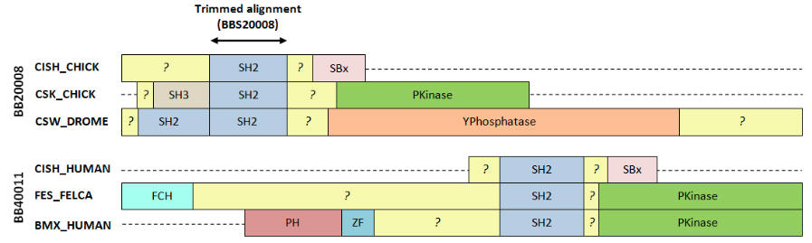

| MUSCLE manual |
| BALIBASE aligns regions that are not homologous |
|
This figure shows two alignments from BALIBASE v3 with annotations from SWISS-PROT. Both these sets have proteins with radically different domain organizations, with only a small locally alignable region in the SH2 domain. Outside the SH2 domain, sequences are not homologous and have unrelated structures. In my opinion, these alignments are egregiously wrong outside of the SH2 domain and it is not reasonable to use them to assess accuracy of a global method like CLUSTALW, T-COFFEE, MUSCLE or PROBCONS.
 |